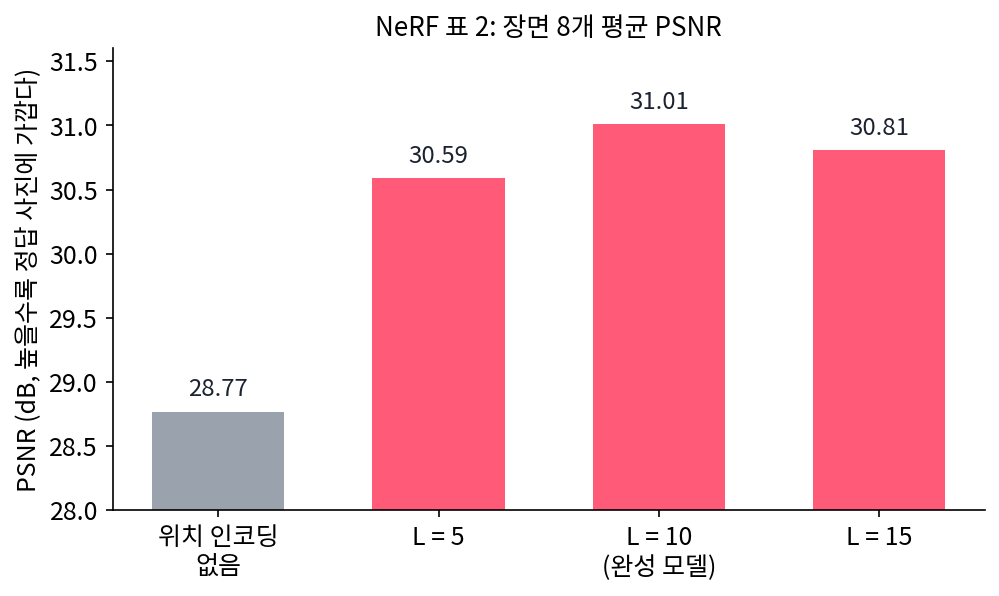
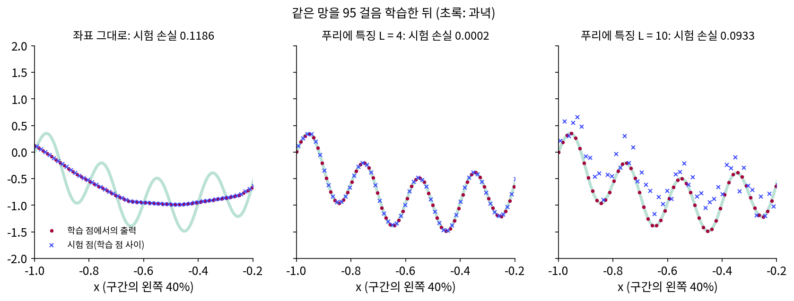
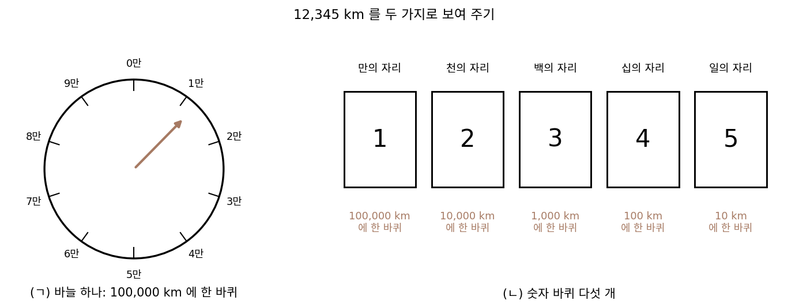
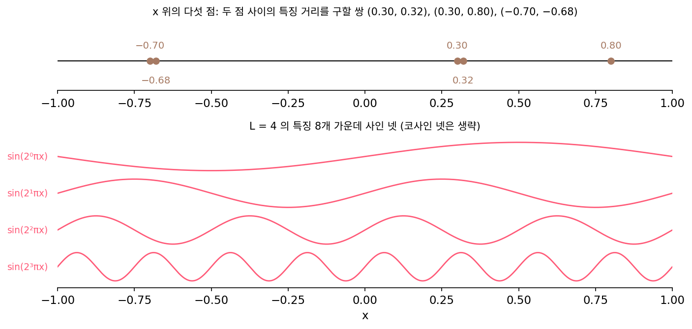
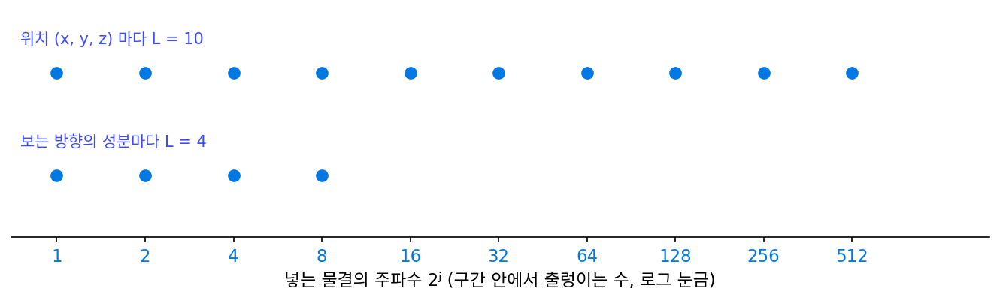

푸리에 특징: 좌표를 물결로 펴서 넣기
가는 물결은 그 주파수 쪽 커널 고윳값이 작아서 늦게 배워졌는데, 그렇다면 망은 그대로 두고 입력을 바꿔서 커널을 바꿀 수 없을까? 신경 탄젠트 커널은 두 입력에서 잰 그래디언트의 내적이니, 입력이 무엇이냐에 따라 달라진다. 좌표 x 하나를 넣는 대신, 주파수가 다른 사인·코사인 물결 여러 개의 값을 넣으면 커널의 스펙트럼은 어떻게 바뀔까?
역사: 먼저 써 보고, 석 달 뒤에 왜 통하는지 밝히다
캘리포니아 대학 버클리의 밀든홀(Ben Mildenhall), 스리니바산(Pratul Srinivasan), 탄식(Matthew Tancik)과 동료들은 2020년 3월 arXiv 에 NeRF 를 올리고 그해 유럽컴퓨터비전학회(ECCV)에서 발표했다. 장면을 「공간의 점과 보는 방향을 넣으면 밀도와 색을 내는 망」 하나로 적는 방법이다. 좌표를 그대로 넣으면 그림이 뭉개지자, 그들은 좌표마다 sin(2⁰πp), cos(2⁰πp), …, sin(2L−1πp), cos(2L−1πp) 를 넣었다. 위치에는 L = 10, 방향에는 L = 4 를 썼고, 줄이는 실험에서 L 을 5 로 줄이면 나빠지고 15 로 늘려도 나아지지 않았다. 그들은 2L 이 사진에 든 가장 높은 주파수(그들의 데이터에서 대략 1024)를 넘으면 L 을 더 늘려도 얻는 것이 없다고 보았다. 논문은 트랜스포머의 위치 인코딩이 비슷한 꼴이라는 것도 적었다.

그 꼴이 왜 통하는지는 석 달 뒤인 2020년 6월에 나왔다. 탄식·스리니바산·밀든홀 등은 NeurIPS 2020 에 「푸리에 특징은 낮은 차원 영역에서 망이 높은 주파수 함수를 배우게 한다(Fourier Features Let Networks Learn High Frequency Functions in Low Dimensional Domains)」를 냈다. NeRF 를 함께 쓴 탄식이 첫 저자인 이 논문은 신경 탄젠트 커널로 답을 밝혔다. 좌표를 그대로 넣은 망의 커널은 높은 주파수에서 고윳값이 급히 줄지만, 좌표를 물결로 편 뒤 넣으면 커널이 「두 점의 차이에만 기대는」 꼴이 되고, 넣은 물결의 주파수로 그 커널이 고르게 덮는 주파수 폭을 조절할 수 있다는 것이다. 같은 달에 시츠만(Vincent Sitzmann)과 동료들은 활성화 함수 자체를 사인으로 바꾼 망(SIREN)을 내놓아, 다른 길로 같은 문제에 닿았다.

L 을 5, 10, 15 로 바꿔 보는 거면, 왜 통하는지 몰라도 그냥 여러 개 다 돌려 보면 되잖아요.

하나 돌리는 데 얼마나 걸렸을까요? NeRF 논문은 장면 하나를 학습하는 데 V100 GPU 한 장으로 10만~30만 스텝, 하루 이틀이 걸린다고 적었어요.

L 하나 바꿀 때마다 하루 이틀이요? 장면도 여러 개인데… 그러면 몇 개만 골라 본 게 이해가 가네요.

그런데 2L 이 사진의 가장 높은 주파수를 넘으면 소용없다고 본 건 이미 주파수로 생각한 거잖아요. 그 정도면 이유도 안 거 아니에요?

얼마나 넣으면 되는지는 짐작했지만, 좌표 그대로면 왜 뭉개지는지는 스펙트럼 편향을 인용하는 데서 멈췄어요. 좌표를 펴면 커널이 어떻게 바뀌는지 보이려면 신경 탄젠트 커널(2018)과 그것을 주파수로 나눈 계산(2019)을 이어야 했는데, 둘 다 나온 지 한두 해밖에 안 된 도구였어요.

석 달 뒤 논문이 커널과 주파수 계산을 좌표 펴기에 이은 거네요. 그럼 우리 장난감에서도 좌표 대신 물결 몇 개를 넣으면 가는 물결이 빨라지는지, L 을 너무 크게 하면 무슨 일이 생기는지 직접 볼 수 있겠네요?
좌표 그대로, L = 4, L = 10
앞의 장난감(과녁 sin πx + 0.5 sin 10πx, 학습 점 128개, 폭 128 세 층 망, Adam)에서 입력만 바꿔 보자. 입력 x 를 NeRF 와 같은 꼴로 편다.
이 절에서 L 은 길이가 아니라 넣는 주파수의 개수다. L = 4 면 구간 안에서 1, 2, 4, 8 번 출렁이는 물결의 사인·코사인 8개, L = 10 이면 512 번 출렁이는 물결까지 20개다. 입력 수만 늘 뿐, 폭 128 인 은닉층 셋과 Adam(학습률 0.001)은 좌표 하나를 넣던 망과 같다.
| 입력 | 굵은 물결이 10% 아래로 | 가는 물결이 10% 아래로 | 3000 스텝 뒤 시험 손실 |
|---|---|---|---|
| 좌표 그대로 (1개) | 54 스텝 | 1699 스텝 | 0.00111 |
| L = 4 (8개) | 16 스텝 | 35 스텝 | 0.00002 |
| L = 10 (20개) | 17 스텝 | 45 스텝 | 0.0781 |
L = 4 면 가는 물결이 좌표 그대로보다 49배 빠른 35 스텝 만에 맞고, 시험 손실도 0.00002 로 셋 가운데 가장 작다. 그런데 L = 10 은 학습 점에서는 똑같이 빨리 맞추면서 시험 손실이 0.0781 으로 크다. 학습 점 사이 한가운데에서 망의 출력이 과녁을 벗어나 들쭉날쭉한 것이다.
L = 10 의 출력이 들쭉날쭉해지는 것은 샘플링에서 본 에일리어싱 때문이다. 학습 점은 간격 1/64 의 칸이라 구간 안에서 64 번보다 빨리 출렁이는 물결은 칸 위에서 다른 물결로 둔갑한다. L = 10 의 특징 20개 가운데 64, 128, 256, 512 번 출렁이는 사인 넷은 학습 점에서 모두 0 이고, 128, 256, 512 번 출렁이는 코사인 셋은 모두 1 이다. 망은 학습 내내 그 특징들이 늘 0 이거나 1 인 세상만 보았다. 그런데 학습 점 사이 한가운데에서는 64 번 출렁이는 사인이 ±1, 128 번 출렁이는 코사인이 −1 이 된다. 망이 한 번도 본 적 없는 입력이 들어가니 출력이 아무 값이나 된다.
L = 4 가 왜 잘 되었는지는 커널로 보면 드러난다. 특징 두 묶음의 내적은 sin a sin b + cos a cos b = cos(a − b) 를 써서 아래처럼 두 점의 차이만으로 적힌다.
특징의 길이는 늘 √L 로 같으니, 그 위에 얹은 망의 커널도 두 점의 차이에 거의 기대게 된다. 넓은 망에서 재 보면 커널 행렬이 「첫 행을 옆으로 민 것」에서 벗어난 정도가 좌표 그대로 0.470, L = 4 에서 0.128, L = 10 에서 0.060 이다. 두 점의 차이에만 기대는 커널은 평행이동에 변하지 않으므로 고유벡터가 그대로 사인·코사인 물결이 되고, 주파수마다 고윳값이 하나씩 붙는다. L = 4 의 넓은 망에서 그 고윳값은 주파수 1, 2, 4, 8 에서 8.36, 7.73, 8.07, 6.94 로 고르게 크고, 주파수 10 에서 0.658, 16 에서 0.059 로 줄어든다. 좌표 그대로였을 때 주파수 10 의 고윳값 0.000132 보다 5천 배쯤 크다. 이렇게 좌표를 주파수가 다른 사인·코사인의 값으로 펴서 망에 넣는 것을 푸리에 특징 (좌표를 물결로 편 입력 / Fourier features)이라 한다. 넣은 주파수가 커널이 고르게 덮는 주파수의 폭을 정하고, 그 폭이 학습 점의 칸 간격이 감당하는 주파수를 넘으면 에일리어싱이 생긴다.

ML에서: NeRF 는 위치에 60개, 방향에 24개
NeRF 는 위치 좌표 셋(x, y, z)을 각각 L = 10 으로 펴서 3 × 2 × 10 = 60 개를, 보는 방향의 성분 셋을 각각 L = 4 로 펴서 3 × 2 × 4 = 24 개를 망에 넣는다. 좌표는 구간 [−1, 1] 로 맞춘 뒤 편다. 가장 빠른 위치 특징은 그 구간 안에서 2⁹ = 512 번 출렁이니, 한 번 출렁이는 길이는 0.0039(구간 길이 2 의 512분의 1)다. NeRF 논문은 광선 위에서 망을 물어볼 점을 정해진 칸에 두지 않고, 광선을 같은 간격의 구간으로 나누어 구간마다 점 하나를 무작위로 뽑았다. 정해진 칸에서만 물어보면 표현의 해상도가 그 칸 간격에 묶이지만, 무작위로 뽑으면 학습 내내 망이 이어진 자리 곳곳에서 불린다고 논문은 적었다. 학습 점이 늘 같은 128칸에 놓였던 장난감과 처지가 다르다. 방향에는 왜 주파수를 적게 넣었는지와, 데이터에 맞춰 L 을 고르는 일은 아래 문제 9 에서 따진다.
문제 7. 주행거리계의 바퀴
자동차 계기판에 거리를 보여 주는 방법이 둘 있다. (ㄱ) 바늘 하나가 0 에서 100,000 km 까지 한 바퀴를 돈다. (ㄴ) 숫자 바퀴 다섯 개가 있고, 일의 자리 바퀴는 10 km 마다, 십의 자리는 100 km 마다, …, 만의 자리는 100,000 km 마다 한 바퀴를 돈다. (가) 12,345 km 와 12,348 km 인 두 차를 (ㄱ)과 (ㄴ)으로 보면 각도가 얼마나 다른가? (나) 12,345 km 와 62,345 km 인 두 차는? (다) 일의 자리 바퀴만 남기면 어떤 일이 생기는가?

(가)는 (ㄱ)이 3 km 차이니까 360° × 3/100000 = 0.0108° 예요. 거의 같은 자리라 눈으로는 못 가르겠네요. (ㄴ)은 일의 자리 바퀴가 3 칸, 360° × 3/10 = 108° 차이라 바로 보여요.

(나)는 반대야. (ㄱ)은 5만 km 차이라 180° 로 잘 갈리는데, (ㄴ)은 일·십·백·천 자리 바퀴가 다 똑같은 각도이고 만의 자리 바퀴만 180° 달라.
그럼 (다)는요? 일의 자리 바퀴만 보면요.
12,345 km 랑 12,355 km 가 똑같이 보여요. 10 km 마다 같은 각도로 돌아오니까요. 빠른 바퀴는 가까운 두 차를 잘 가르지만, 혼자서는 먼 두 차를 못 갈라요.

그래요. 그래서 느린 바퀴와 빠른 바퀴를 함께 둬요. 느린 바퀴는 굵은 자리를, 빠른 바퀴는 가는 자리를 맡죠. 바늘 하나로 거리를 적는 것이 좌표를 그대로 넣는 것이라면, 바퀴 다섯 개는 무엇에 해당할까요?

주파수가 두 배씩 다른 물결로 편 푸리에 특징이요. 거기서는 10배씩이 아니라 2배씩이지만요. 좌표 0.30 과 0.32 는 좌표로는 0.02 밖에 안 다른데, 빠른 특징에서는 각도가 크게 달라요.

학번도 입학 연도, 학과 번호, 순번으로 자리를 나눠 적으니까 조교님이 한눈에 누가 누군지 알아보는 거네요.
문제 8. 이웃이 멀어지는 특징
(가) L = 4 의 특징에서 x = 0.30 과 0.32 의 거리, 0.30 과 0.80 의 거리를 구하라. 좌표 그대로의 거리와 비교하라. (나) L = 10 에서 같은 두 쌍의 거리는? (다) 같은 계산을 x = −0.70 과 −0.68 로 하면 어떻게 되는가? 왜 그런가?

특징의 거리는 √(2L − 2 × 내적)이고 내적은 cos 의 합이에요. (가)는 L = 4 에서 0.30 과 0.32 가 0.574, 0.30 과 0.80 이 2.449 예요. 좌표로는 0.02 와 0.5 니까, 둘 다 멀어졌지만 순서는 같아요.
(나)는 L = 10 에서 0.30 과 0.32 가 3.763, 0.30 과 0.80 이 2.449 야. 어? 가까운 쌍이 먼 쌍보다 더 멀어.
차이 0.5 에서 cos(2jπ × 0.5) 는 j 마다 얼마죠?

하나씩 넣어 볼게요. j = 0 이면 cos(π/2) = 0, j = 1 이면 cos π = −1, j = 2 면… 2π 라서 1 이에요. 그 위로는 다 2π 의 배수라 모두 1 이고요.

그럼 L = 10 이면 내적이 0 − 1 + 8 = 7 이네. 엄청 커.
빠른 특징 여덟 개가 차이 0.5 를 한 바퀴의 배수로 보고 「같은 자리」라고 하는 거야. 차이 0.02 는 빠른 특징에서 아무 각도나 되니까 오히려 멀어지고.

(다)는 숫자가 똑같아요. 0.574, 3.763. 자리를 옮겨도 차이가 0.02 면 거리가 같아요.
내적이 차이만의 함수였죠. 그래서 커널이 평행이동에 변하지 않고, 고유벡터가 물결이 돼요. 그런데 (나)는 무엇을 말해 주나요?
주파수를 너무 높이 넣으면… 망에게는 0.30 과 0.80 이 이웃이고 0.30 과 0.32 는 남남이 돼요.
그러면 학습 점 사이에서는 어떤 일이 생길까요?
이웃한 학습 점에서 배운 것이 그 사이로 이어지지 않으니 학습 점 사이가 들쭉날쭉했던 거고요. 주기 함수를 배울 때 주기를 잘못 잡으면 전혀 다른 점끼리 같은 값으로 묶이는 거랑 같아요.
문제 9. L 을 데이터에 맞춰 고르기
(가) NeRF 는 위치에 L = 10, 방향에 L = 4 를 썼는데, 방향에는 왜 주파수를 적게 넣었는지 짐작해 보라. (나) 장난감에서 노이즈 섞인 정답(표준편차 0.3)으로 L = 10 의 망을 학습하면 시험 손실이 가장 낮은 스텝과 그때의 시험 손실은 얼마인가? 좌표 그대로였을 때의 1800 스텝 0.0192 와 비교하라. (다) 「L 은 클수록 좋다」는 말이 왜 틀렸는지 정리하라. (위젯 3 에서 L = 4 와 L = 10 을 오가며 시험 점을 보자.)

(가)는 방향이 세 성분뿐이라서요? 위치도 세 성분이니까 그건 아니겠네요. 음… 보는 방향을 조금 바꿔도 색이 조금만 바뀌어서 아닐까요? 반짝이는 표면이 아니면 어느 쪽에서 봐도 색이 거의 같으니까요.
그 말을 주파수로 하면요?

방향에 따라 색이 바뀌는 함수는 낮은 주파수에 몰려 있으니까, 빠른 특징을 넣을 필요가 없어요. 넣으면 오히려 방향 사이를 들쭉날쭉하게 이을 위험만 커지고요.
(나)는 L = 10 이면 시험 손실이 35 스텝째 0.1126 으로 가장 낮고, 100 스텝에는 학습 손실이 0.0001 로 노이즈까지 다 외워. 좌표 그대로가 1800 스텝에 0.0192 였으니까 여섯 배쯤 나빠. 높은 주파수 축의 고윳값이 커지니까, 높은 주파수에 퍼진 노이즈도 굵은 물결만큼 빨리 외우는 거야.
(다)는요?
푸리에 특징은 높은 주파수 쪽 고윳값을 키워서 스펙트럼 편향을 덜어 줘요. 그런데 (나)에서는 그게 오히려 나빴어요.
스펙트럼 편향이 문제 6(노이즈 섞인 정답)에서는 무슨 일을 했었죠?
노이즈를 늦게 외우게 해 줬어요. 그러니까 데이터에 실제로 있는 가장 높은 주파수까지만 넣고, 그 위는 넣지 말아야 해요.
학습 점의 간격이 감당하지 못하는 주파수를 넣으면 에일리어싱까지 생기겠고.
NeRF 가 2L 이 사진의 가장 높은 주파수를 넘으면 더 얻는 게 없다고 한 것도 그 말이에요.
렌즈 배율(넣는 주파수의 개수 L)을 높이면 잘 보이지만, 너무 높이면 먼지랑 흠집(노이즈)까지 크게 보여서 정작 보려던 게 안 보이는 거랑 같네요. 생물 실험 시간에 현미경 배율을 무조건 높였다가 혼났어요.